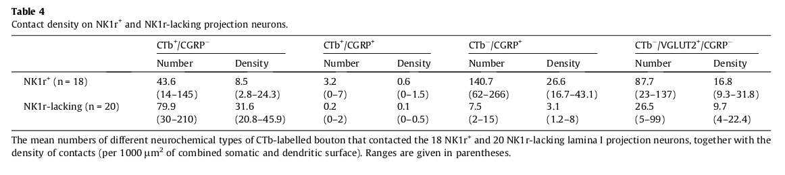

<?xml version="1.0" encoding="UTF-8"?>
<table xmlns="http://www.w3.org/1999/xhtml">
 <tr>
  <td>
   
   <p>target/pdftable1/10.1016_j.pain.2014.08.023/tables/table4/table.png</p>
  </td>
  <td>
   <table style="border: 1px solid black;">
    <caption/>
    <tr>
     <th style="border: 1px solid black;">Number </th>
     <th style="border: 1px solid black;">Density </th>
     <th style="border: 1px solid black;">Number </th>
     <th style="border: 1px solid black;">Density </th>
     <th style="border: 1px solid black;">Number </th>
     <th style="border: 1px solid black;">Density </th>
     <th style="border: 1px solid black;">Number </th>
     <th style="border: 1px solid black;">Density </th>
    </tr>
    <tr>
     <td style="border: 1px solid black;">NK1r ^{+}</td>
     <td style="border: 1px solid black;">(n = 18)</td>
     <td style="border: 1px solid black;">43.6</td>
     <td style="border: 1px solid black;">8.5</td>
     <td style="border: 1px solid black;">3.2</td>
     <td style="border: 1px solid black;">0.6</td>
     <td style="border: 1px solid black;">140.7</td>
     <td style="border: 1px solid black;">26.6</td>
     <td style="border: 1px solid black;">87.7</td>
     <td style="border: 1px solid black;">16.8</td>
    </tr>
    <tr>
     <td style="border: 1px solid black;"/>
     <td style="border: 1px solid black;"/>
     <td style="border: 1px solid black;">(14–145)</td>
     <td style="border: 1px solid black;">(2.8–24.3)</td>
     <td style="border: 1px solid black;">(0–7)</td>
     <td style="border: 1px solid black;">(0–1.5)</td>
     <td style="border: 1px solid black;">(62–266)</td>
     <td style="border: 1px solid black;">(16.7–43.1)</td>
     <td style="border: 1px solid black;">(23–137)</td>
     <td style="border: 1px solid black;">(9.3–31.8)</td>
    </tr>
    <tr>
     <td style="border: 1px solid black;">NK1r-lacking (n = 20)</td>
     <td style="border: 1px solid black;"/>
     <td style="border: 1px solid black;">79.9</td>
     <td style="border: 1px solid black;">31.6</td>
     <td style="border: 1px solid black;">0.2</td>
     <td style="border: 1px solid black;">0.1</td>
     <td style="border: 1px solid black;">7.5</td>
     <td style="border: 1px solid black;">3.1</td>
     <td style="border: 1px solid black;">26.5</td>
     <td style="border: 1px solid black;">9.7</td>
    </tr>
    <tr>
     <td style="border: 1px solid black;"/>
     <td style="border: 1px solid black;"/>
     <td style="border: 1px solid black;">(30–210)</td>
     <td style="border: 1px solid black;">(20.8–45.9)</td>
     <td style="border: 1px solid black;">(0–2)</td>
     <td style="border: 1px solid black;">(0–0.5)</td>
     <td style="border: 1px solid black;">(2–15)</td>
     <td style="border: 1px solid black;">(1.2–8)</td>
     <td style="border: 1px solid black;">(5–99)</td>
     <td style="border: 1px solid black;">(4–22.4)</td>
    </tr>
   </table>
   <p>target/pdftable1/10.1016_j.pain.2014.08.023/tables/table4/table.svg.html</p>
  </td>
 </tr>
</table>
